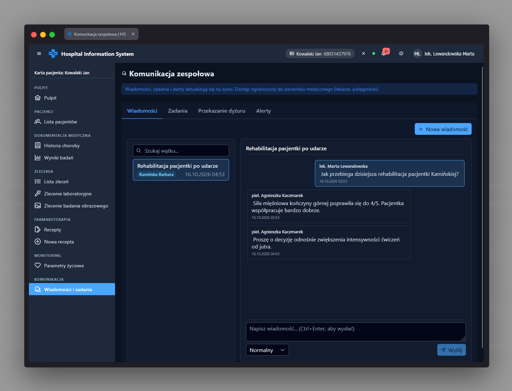

Konwersacja app-message-conversation
Ścieżka
To nie jest samodzielna trasa routingu, lecz komponent wbudowany w
prawy panel zakładki "Wiadomości" strony
/messages (MessagesPage, dziecko
AppShell). Znajduje się w szablonie
apps/his_frontend/src/app/pages/messages/messages-page.html
i jest renderowany, gdy na liście wątków po lewej stronie wybrano
konkretny wątek; gdy żaden wątek nie jest wybrany, w tym miejscu
widoczny jest stan pusty "Brak wątku" / "Wybierz wątek z listy po
lewej.". Trasa /messages nie ma dodatkowego strażnika
uprawnień (RBAC) poza ogólnym authGuard powłoki
aplikacji - odczyt/wysyłka wiadomości (message:read /
message:write) są przyznane każdej roli; dopiero
zakładki "Zadania", "Przekazanie dyżuru" i "Alerty" na tej samej
stronie wymagają odpowiednio uprawnień task:read i
alert:read.
Przeznaczenie
Prawy panel widoku wiadomości: wyświetla temat wątku, chronologiczną listę wiadomości (bąbelki czatu) oraz formularz do napisania i wysłania nowej wiadomości w tym wątku.
Dane wejściowe
- Treść wiadomości wpisana w polu tekstowym (textarea) composera.
- Wybór priorytetu nowej wiadomości z listy rozwijanej (opcje: "Normalny", "Wysoki", "Krytyczny" - domyślnie "Normalny").
-
Kliknięcie przycisku "Wyślij" albo kombinacja klawiszy
Ctrl+Enter/Cmd+Enterw polu tekstowym.
Akcje
- Wyświetla temat wątku (jeśli przekazany) oraz wiadomości posortowane chronologicznie po dacie wysłania.
-
Każda wiadomość pokazuje nadawcę (etykieta z funkcji
senderLabel), znacznik priorytetu (app-status-tag, rodzajpriority) gdy priorytet jest inny niż "Normalny", treść wiadomości oraz datę/godzinę wysłania. Bąbelek jest wizualnie oznaczony jako wychodzący, gdy nadawcą jest zalogowany użytkownik, albo jako przychodzący w przeciwnym razie. - Gdy w wątku nie ma żadnych wiadomości, wyświetla komunikat "Brak wiadomości w tym wątku.".
-
Przycisk "Wyślij" jest nieaktywny, gdy treść jest pusta (po
przycięciu białych znaków) albo trwa wysyłanie
(
sending). -
Po wysłaniu emituje zdarzenie
sendz treścią i wybranym priorytetem, a następnie czyści pole tekstowe i przywraca priorytet "Normalny". Samo zapisanie wiadomości (wywołanie API) obsługuje rodzic - strona Wiadomości.
Zrzut ekranu
